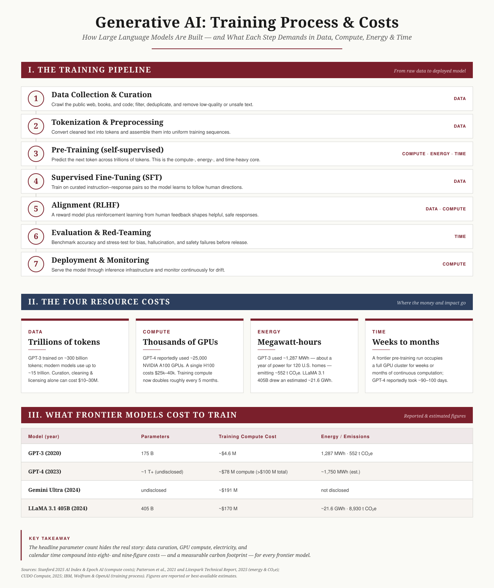

{kind=link}
{kind=link}
Generative AI LLM Infrastructure — The Training Process and Its Resource Costs in Data, Compute, Energy, and Time
Back to artifacts
Generative AI LLM Infrastructure
An infographic mapping the end-to-end training pipeline of large language models and the data, compute, energy, and time costs behind frontier systems like GPT-4, Gemini Ultra, and LLaMA 3.1.

Title
Introduction
The fluency of a model like ChatGPT can make it feel effortless, but behind every large language model (LLM) sits an enormous and expensive industrial pipeline (IBM Technology, 2023; Wolfram, 2023). This artifact translates that pipeline into a single visual reference, showing both how an LLM is trained — from raw data collection through to deployment — and what each stage demands in data, computational power, energy, and time. Concrete figures for frontier models such as GPT-4, Gemini Ultra, and LLaMA 3.1 ground the abstractions in real numbers.
Description
The infographic is organized into three connected sections:
- The Training Pipeline — a seven-step flow: data collection and curation, tokenization and preprocessing, self-supervised pre-training, supervised fine-tuning, alignment via reinforcement learning from human feedback (RLHF), evaluation and red-teaming, and deployment and monitoring. Each step is tagged with the resource it consumes most heavily.
- The Four Resource Costs — cards quantifying data (trillions of tokens), compute (thousands of GPUs), energy (megawatt-hours and CO2e), and time (weeks to months of continuous training).
- What Frontier Models Cost — a comparison table of reported and estimated training costs and energy use for GPT-3, GPT-4, Gemini Ultra, and LLaMA 3.1 405B.
A short "key takeaway" panel closes the piece, and a source line documents where the figures come from. Color-coded section bands and a consistent card schema let a reader scan either by training stage or by resource category.
Objective
To produce a clear, professional reference that satisfies the AIML-501 Workshop Three outcomes: illustrating the key steps of training generative AI LLMs, explaining the primary resource categories and their costs, and communicating that complexity visually for a varied audience. The artifact deliberately exercises a different skill set than my earlier algorithm and neural-network pieces — here the emphasis is on systems-level infrastructure, cost analysis, and data visualization rather than algorithm taxonomy. For my own security and research focus, it also serves as a reminder that the economics of training concentrate frontier AI in a few well-funded labs, which has direct implications for model governance and risk.
Process
The artifact was developed in five steps.
- Foundational reading. Reviewed the assigned resources on how LLMs work and what makes them function to map the conceptual pipeline accurately (IBM Technology, 2023; Eye on Tech, 2023; Wolfram, 2023).
- Figure research. Gathered reported and estimated cost, energy, and compute figures for specific frontier models from authoritative aggregators of the Stanford AI Index and Epoch AI data, and from peer-reviewed energy estimates (CUDO Compute, 2025; Patterson et al., 2021).
- Information architecture. Structured the content into a process flow, a resource breakdown, and a comparison table so the same information can be read two ways — by stage or by resource.
- Visual design. Built the layout as a scalable SVG using the portfolio's editorial type and color system, with color-coded section bands and uniform cards for legibility at any size.
- Export & integration. Rendered both SVG and high-resolution PNG versions, embedded the SVG in this page, and added downloadable copies.
References
CUDO Compute. (2025, May 12). What is the cost of training large language models? https://www.cudocompute.com/blog/what-is-the-cost-of-training-large-language-models
Eye on Tech. (2023, April 4). What is ChatGPT? [Video]. YouTube. https://www.youtube.com/watch?v=OGmDr8TLtTo
IBM Technology. (2023, July 28). How large language models work [Video]. YouTube. https://www.youtube.com/watch?v=5sLYAQS9sWQ
Patterson, D., Gonzalez, J., Le, Q., Liang, C., Munguia, L.-M., Rothchild, D., So, D., Texier, M., & Dean, J. (2021). Carbon emissions and large neural network training (arXiv:2104.10350). arXiv. https://arxiv.org/abs/2104.10350
Wolfram, S. (2023, February 14). What is ChatGPT doing … and why does it work? Stephen Wolfram Writings. https://writings.stephenwolfram.com/2023/02/what-is-chatgpt-doing-and-why-does-it-work/